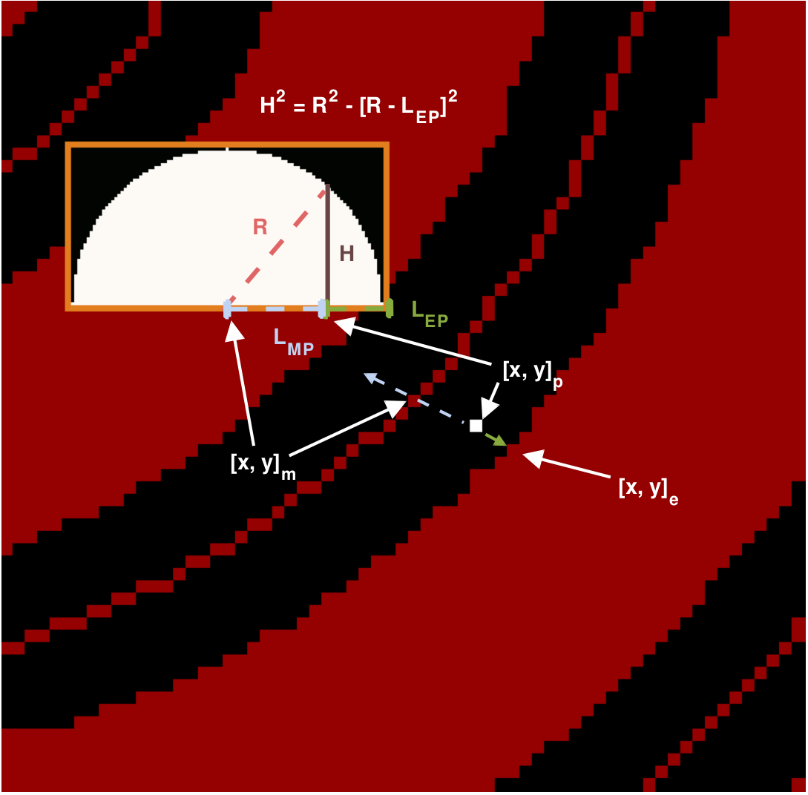

Getting Started: thickness¶
I. OVERVIEW
The ‘RP_thickness’ analysis creates a half-thickness image from a binary segmented image, assuming a cylindrical shape.
In this analysis, a skeleton (i.e. medial axis transform) of the binary image is calculated. A distance transform of the root is then calculated - the distance transform on the medial axis pixel is labeled a “root radius” value R.
From here, for every pixel [x, y]<sub>p<sub>, the closest root edge pixel [x, y]<sub>e<sub> that doesn’t intersect the medial axis is found. We calculate the edge-pixel distance L<sub>EP<sub>. Then, we extend the line between these two points, and extend it in the opposite direction, identifying the closest medial pixel [x, y]<sub>m<sub>, whose path consists entirely of the root (e.g. no medial axes that are located on other root segments). From here, we use the R value assigned to [x, y]<sub>m<sub>. Then, assuming a cylindrical distribution around the medial axis, we can calculate the half-dom height H of the pixel as follows:
Outline of the individual components in the thickness analysis.
We assume that L_MP and L_EP are on an equal plane, thereby making R = L_MP + L_EP. Then, assuming a cylindrical distribution around the medial axis, we can calculate the half-dome height H of the pixel as follows:

Final product of the thickness analysis, with a 3D surface image of a selected area. Note that the surface image is not 3D due to different scaling between the z and xy axis.
NOTE: the output values are the half-dome height of the root - if the full thickness of the root in the cross-sectional direction is desired, multiply all values by 2.
II. HOW TO USE
First, open the ‘user_config’ text file in your ‘Root_Processing’ directory. The parameters used in ‘RP_thickness’ are in the 8th section, and there will be two parameters. In order, they are:
image_filename: this is the full image filename (including directory) where the image is to be found.
output_filename: this is the full image filename (including directory) where the image is to be saved. If the directory is not present, the analysis will automatically make the directory.
III. RUNNING THE CODE
This analysis can be conducted using the [‘RP_thickness’] string in the ‘RP_run’ module.